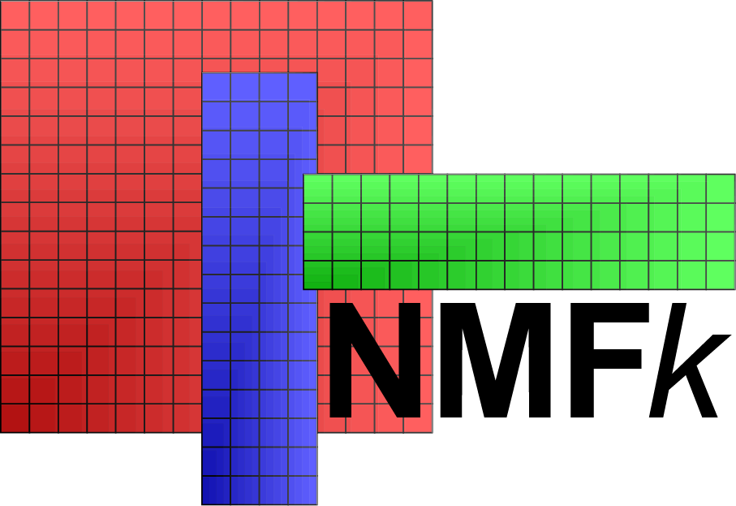

Nonnegative Matrix Factorization
NMFk is a novel unsupervised Machine Learning method based on Matrix Decomposition coupled with sparsity and nonnegativity constraints.
NMFk is developed in Julia.
Nonnegative Tensor Factorization
NTFk is a novel unsupervised Machine Learning method based on Tensor Decomposition coupled with sparsity and nonnegativity constraints.
NTFk is developed in Julia.